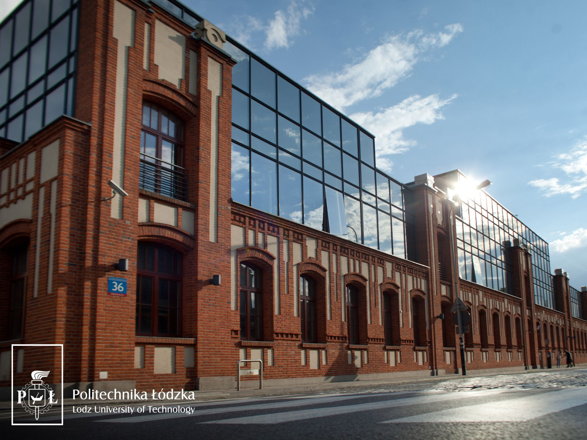
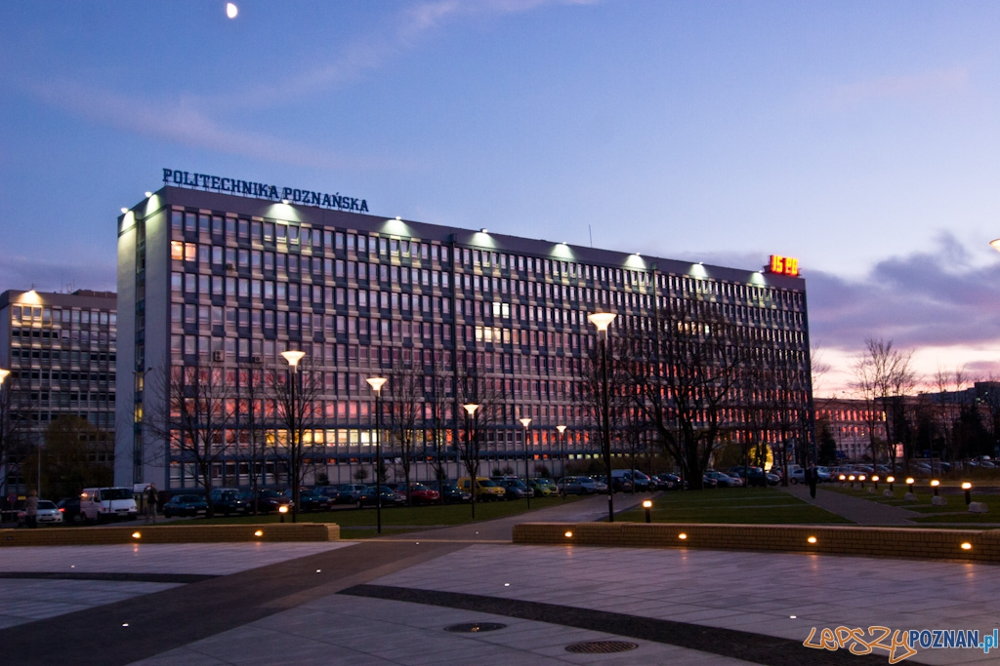
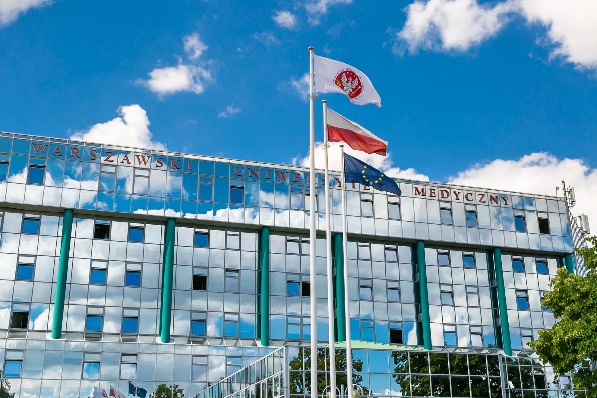

الجامعات التقنية
جامعة وارسو التفنية

تضم جامعة وارسو احد أهم معاهد التكنولوجيا الرائدة في بولندا وواحد من أكبر المعاهد في أوروبا الوسطى. في بولندا ، كانت أول جامعة متعددة التخصصات للتكنولوجيا هي المدرسة التحضيرية لمعهد التكنولوجيا ، التي تأسست عام 1826 ميلادي. وما زالت جامعة وارسو للتكنولوجيا تزرع تقاليدها. تتكون جامعة وارسو للتكنولوجيا من 20 كلية وتقدم تعليمًا على 3 مستويات (بكالوريوس ، ماجستير ، دكتوراه) في كل مجال تقريبًا من مجالات الهندسة والتكنولوجيا - بدءًا من الهندسة المدنية والهندسة المعمارية إلى الإلكترونيات الضوئية والمواد ، تكنولوجيا النانو والتكنولوجيا الحيوية
جامعة وودج التقنية
تم إنشاء جامعة لودز للتكنولوجيا في عام 1945 وتطورت لتصبح واحدة من أكبر الجامعات التقنية في بولندا. يقع في الأصل في مبنى مصنع قديم ، ويغطي اليوم ما يقرب من 200000 متر مربع في أكثر من 70 مبنى منفصل
جامعة قدانسك التقنية

جامعة غدانسك للتكنولوجيا هي جامعة تقنية في منطقة Wrzeszcz بمدينة غدانسك ، وهي واحدة من أقدم الجامعات في بولندا. تضم ثماني كليات وتضم 41 مجالًا دراسيًا وأكثر من 18 ألف طالب جامعي ، بالإضافة إلى حوالي 626 طالب دكتوراه.
جامعة لوبلين التقنية

جامعة لوبلين للتكنولوجيا هي جامعة هندسية في لوبلين ، بولندا. تأسست في 13 مايو 1953 وتضم حاليًا 7787 طالبًا
جامعة بوزنان التقنية
جامعة بوزنان للتكنولوجيا PUT هي جامعة في بوزنان ، بولندا. تُعرف جامعة بوزنان للتكنولوجيا بأنها واحدة من أفضل الجامعات التقنية في بولندا. صنفت URAP PUT على أنها في أفضل 6٪ من جامعات العالم وصنفها Webometrics في لا. 842 in the world بواسطة Google citation لعام 2015.
جامعة وارسو

"جامعة وارسو (UW) ، تأسست عام 1816 ميلادي، هي أعلى جامعة مرتبة من ناحية الأبحاث الأكاديمية في بولندا. تم تصنيف جامعة وارسو ضمن أفضل 4٪ من الجامعات ذات المستوى العالمي ومعترف بها من قبل التصنيفات الدولية المرموقة مثل التصنيف الأكاديمي للجامعات العالمية (AKA Shanghai Ranking) ، QS Top Universities ، The Times Higher Education World University Rankings. يوجد في UW حاليًا ما يقرب من 66000 طالب. توظف أكثر من 6200 شخص ، من بينهم 3240مدرسًا أكاديميًا. حاليًا ، هناك 19 كلية و 26 وحدة أخرى ، بما في ذلك مركزالتقنيات الجديدة ومركز الأبحاث قبل السريرية والتكنولوجيا ومركز نقل التكنولوجيابالجامعة.
جامعة وارسو لعلوم الحياة

تعد جامعة وارسو لعلوم الحياة (SGGW) أقدم مدرسة أكاديمية زراعية في بولندا ، ويعود تاريخها إلى عام 1816. تتكون الجامعة حاليًا من 13 كلية ؛ هناك 27000 طالب مسجلين. يمكنهم الاختيار من بين 34 تخصصًا و 61 تخصصًا. يغطي البحث والتعليم المجال الكامل للعلوم المتعلقة بالزراعة ، من بين أمور أخرى: هندسة المناظر الطبيعية ، وعلم الأحياء ، والتكنولوجيا الحيوية ، والاقتصاد ، والمالية والمصرفية ، والتخطيط الإقليمي ، والمعلوماتية والاقتصاد القياسي ، والهندسة البيئية ، والغابات ، وحماية البيئة ، والبستنة ، والزراعة ، علم الاجتماع ، تقنيات الزراعة والغابات ، تكنولوجيا الخشب ، علوم السلع ، السياحة والترفيه ، تكنولوجيا الغذاء ، التغذية البشرية ، الطب البيطري ، هندسة الإدارة والإنتاج ، الإدارة والتسويق ، علوم الحيوان. ضمن برنامج Erasmus + ، تقدم SGGW مجموعة واسعة من الموضوعات التي يتم تدريسها باللغة الإنجليزية.
الجامعات الطبية
جامعة وارسو التفنية
The Medical University of Warsaw was reopened on January 1950, building on the University of Warsaw's former Faculty of Medicine, which had been established in the early nineteenth century. The Medical University of Warsaw is the largest medical school in Poland, and one of the most prestigious. The Medical University of Warsaw (MUW) is one of the oldest medical schools inPoland. For over 200 years it has provided education and training in medicineand pharmacy at undergraduate and postgraduate levels. The Medical Universityof Warsaw programs meet the highest international standards ofuniversity-level education and are based on the principles of good clinicaland pharmaceutical practice.